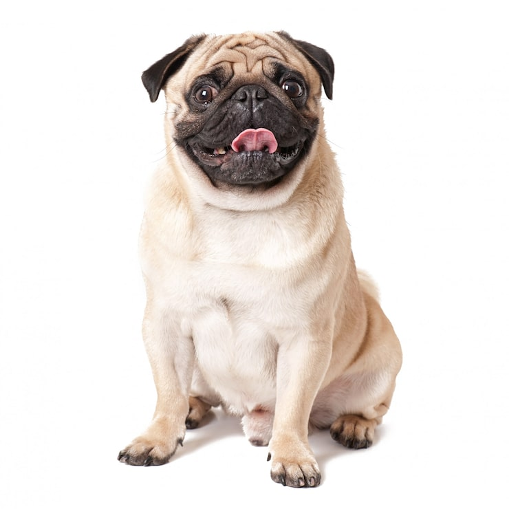
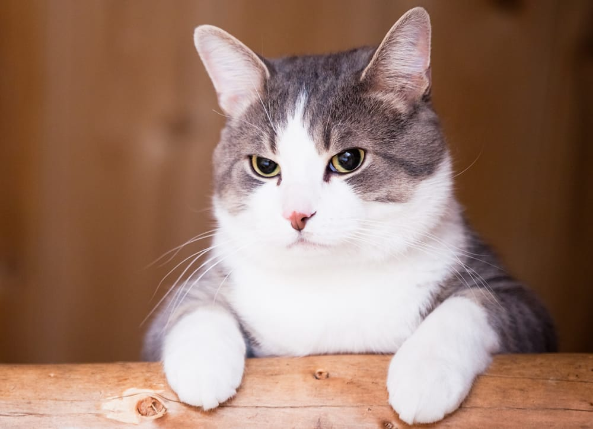
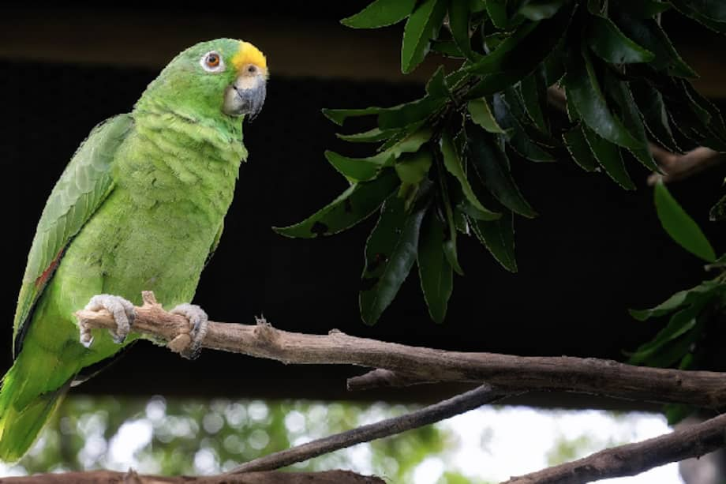

Perro

Son mamíferos carnívoros domésticos, descendientes del lobo gris, conocidos como "el mejor amigo del hombre".

Son mamíferos carnívoros domésticos, descendientes del lobo gris, conocidos como "el mejor amigo del hombre".

Es un pequeño mamífero carnívoro de la familia Felidae, conocido por su agilidad, sentidos agudos y comportamiento independiente.

Son aves altamente inteligentes y sociables que pueden vivir más de 50 años.